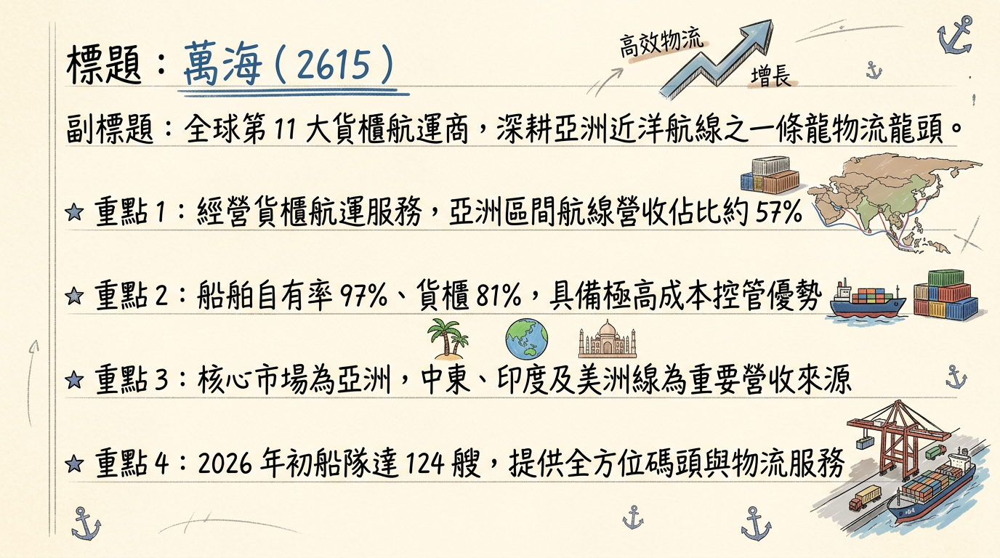
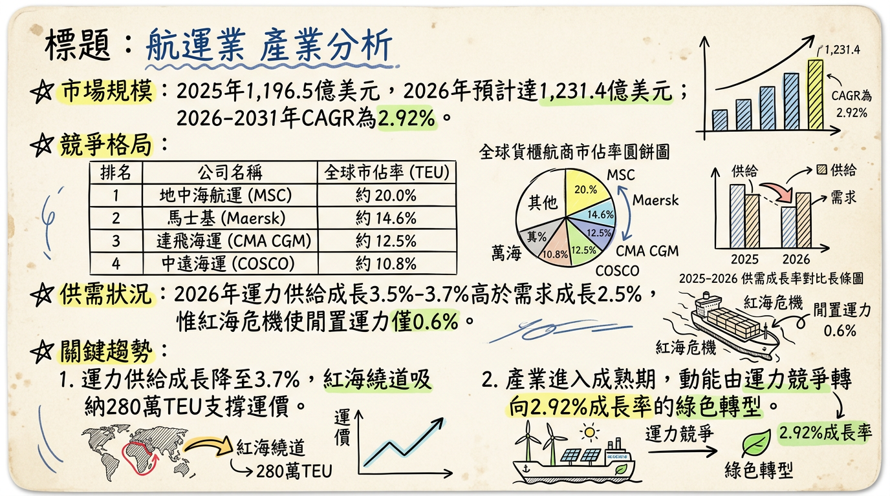
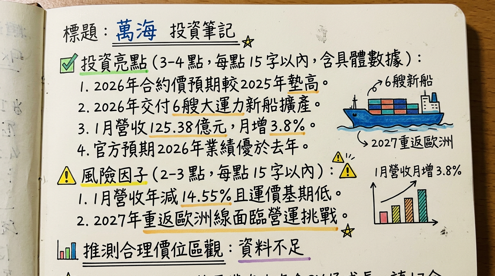

2615 萬海 深度研究報告
一句話摘要
萬海憑藉「亞洲區間航線」霸主地位與高自有船比例，在 2026 年運力供給增速放緩、紅海危機持續及高雄五櫃中心投產的多重利多下，展現優於 2025 年的成長動能。
二、 公司概覽
萬海為全球第 11 大貨櫃航運商（市佔率 1.7%），船隊規模約 124 艘，核心營運策略為「深耕亞洲、佈局全球」。
1. 業務結構與營收佔比 (2025 數據)
| 業務/航線區域 | 營收佔比 (%) | 核心優勢 |
|---|
| 亞洲區間航線 (Intra-Asia) | 57% | 航線最密集、議價力最強、受惠供應鏈移轉東南亞/印度。 |
| 美洲線 (美西/美東/南美) | 29%–37% | 2025-2026 重點強化毛利增長點，與 ONE 合作開闢直達航線。 |
| 中東、印度及紅海線 | 25% | 印度市場成長迅速，2026/03 因地緣政治暫停部分中東訂艙。 |
| 其他（租金與碼頭服務） | 少量 | 包含船舶外租收益，目前日租金高點達 8 萬美元。 |
2. 營運基地
- 台灣： 高雄港第五貨櫃中心（79-81 號碼頭），預計 2026 年底全面發揮自動化效能。
- 日本： 東京大井 5 號碼頭；計畫投資橫濱本牧 D-4 及大阪 C9 碼頭。
三、 核心競爭優勢
船隊年輕化與環保： 平均船齡僅 8.5 年（業界平均 13.5 年），節能船比例高，有效降低歐盟碳稅 (ETS) 成本。
高自有比例： 自有船舶約 97%、自有貨櫃約 81%，在運價波動時具備極佳的成本管控能力。
靈活度高： 主攻中小型船舶，能進入大型航商無法停靠的亞洲二線港口，深耕直客比例高。
四、 財務分析
1. 月營收趨勢表
| 月份 | 營收 (億元) | 月增率 (MoM) | 年增率 (YoY) | 備註 |
|---|
| 2026/01 | 125.38 | +3.80% | -14.55% | 農曆年前拉貨動能強勁 |
| 2025/12 | 120.79 | +11.28% | -15.66% | 2025 全年營收 1,403.54 億 |
| 2025/11 | 108.55 | +3.90% | -19.14% | |
| 2025/10 | 104.47 | -4.20% | -22.31% | |
| 2025/09 | 109.05 | -10.20% | -18.50% | |
2. 獲利表現
- 2024 年 EPS： 16.89 元
- 2025 年 EPS (法人預估)： 9.80 - 11.10 元（前三季累計 7.64 元，Q3 單季達 4.15 元）
- 2026 年 EPS (初步展望)： 預計穩定在 10 元 以上。
五、 法說會重點與管理層 Guidance
- 營運展望： 總經理謝福隆明確表示「2026 年表現一定優於 2025 年」。
- 合約價談判： 美國線長約客戶接受度高，預期 2026 年 5 月換約價格將較 2025 年調升 20%-30%。
- 供需結構： 預測 2026 年運力供給增速放緩至 2.2%，有利運價支撐。
- 產能利用率： 紅海危機繞道吸納約 200 萬至 280 萬 TEU 運力，抵銷新增供給壓力。
六、 券商觀點
| 券商名稱 | 報告日期 | 目標價 | 評等 | 核心觀點 |
|---|
| 法人 (市場共識) | 2026/03/03 | 116.0 元 | 買進 | 中東局勢惡化導致運價飆漲預期 |
| 北城證券 | 2026/02/25 | 87.86 元 | 列入追蹤 | 營運動能回穩，估值尚具空間 |
| CMoney 法人 | 2026/02/02 | 73.00 元 | 持守/保守 | 考量高股息 ETF (00919/00940) 權重調整賣壓 |
| 中信投顧 | 2025/11/12 | 95.00 元 | 買進 | 受惠 Q3 獲利優於預期 |
七、 財報深度分析
1. 利潤率趨勢表格
| 季度 | 毛利率 (%) | 營業利益率 (%) | 稅後淨利率 (%) | 單季 EPS (元) |
|---|
| 2025 Q3 | 30.64 | 25.64 | 33.24 | 4.15 |
| 2025 Q2 | 28.41 | 24.86 | 3.11 | 0.38 |
| 2025 Q1 | 29.38 | 24.92 | 23.57 | 3.11 |
| 2024 Q4 | 33.80 | 31.43 | 30.79 | 4.55 |
2. 營運效率與財務結構
- 收款效率： 應收帳款週轉天數約 8.38 - 8.51 天，收款速度遠快於同業。
- 負債比率： 2025 Q3 為 34.71%，財務結構穩健。
- 資本支出： 2026 年預計支出 6.23 億美元，主要用於支付新船進度款與碼頭自動化升級。
八、 股權異動
- 大股東結構： 董事長陳柏廷持股 0.43%，大股東「賴商怡春航運」持股 12.86%，結構穩定。
- 股利政策： 2025 年配發 3.5 元現金股利（配發率 20.7%）。法人預期 2026 年配息有望隨獲利上修而提升。
- 異動： 近期查無可轉換公司債 (CB) 或大規模申報轉讓。
九、 產業分析與競爭格局
1. 2026 供需展望
- 運力供給成長： 3.5%~3.7% (Alphaliner 數據)，較 2025 年的 7.1% 大幅收斂。
- 全球閒置運力： 低於 1% (約 0.6%)，反映市場供給極度吃緊。
2. 台灣同業比較 (2025 預估)
| 公司名稱 | 2025 營收規模 (估) | 2025 毛利率 (估) | 2025 EPS (估) | 2026 EPS (預) |
|---|
| 長榮 (2603) | 3,800 億 | 25% - 28% | 32.9 元 | 21.9 元 |
| 萬海 (2615) | 1,403 億 | 18% - 20% | 10.0 元 | 10.0+ 元 |
| 陽明 (2609) | 1,626 億 | 15% - 18% | 5.1 元 | 3.0 元 |
十、 近期催化劑
- 【利多】中東地緣政治： 2026/03/03 暫停中東訂艙，預期引發運價報復性上漲。
- 【利多】紅海危機持續： 繞道好望角常態化，吸納過剩運力。
- 【利多】美西線換約： 2026 Q2 合約價看漲。
- 【利空】ETF 賣壓： 高股息 ETF 若調整權重，短期對股價有壓。
- 【利空】地緣政治緩解： 若紅海突然復航，運價將面臨大幅修正。
⭐ 成長動能時間軸
- 2026/02： 接收 7,000 TEU 「爾春輪」投入地中海航線。
- 2026/05： 美國線換約完成，預期合約價高於 2025 年。
- 2026 全年： 累計交付 6 艘新船（2 艘 7,000 TEU、4 艘 8,700 TEU）。
- 2026/12： 高雄港第五貨櫃中心（79-81 號碼頭）全面投產，提升轉運毛利。
- 2027-2030： 接收 30 艘新造船（總運力 +34.5 萬 TEU），並重返歐洲線。
十二、 2026 展望
2026 年萬海將展現「先高後穩」趨勢。成長動能來自於：(1) 亞洲區間線隨東南亞/印度經濟成長擴張；(2) 節能新船加入降低燃油成本；(3) 美西直達航線增加高毛利貨源。風險則在於 2026 下半年若全球消費需求疲軟，或紅海危機意外解決導致運力過剩。
十三、 投資結論
基本面強勁： 2025 全年 EPS 約 10 元，2026 年展望樂觀，管理層預期優於去年。
事件驅動： 中東局勢升溫為短期最強股價催化劑，3 月中旬財報公布前具備題材性。
評價面： 目前股價處於 73-80 元盤整區，對應 2026 獲利，本益比 (P/E) 仍處於合理低位。
操作建議： 具體目標價區間建議 88 - 116 元。建議在 75 元以下逢低布局，分批參與美西線換約利多與紅海紅利。
本報告由 AI 自動產生，資料來源為公開網路資訊，僅供參考，不構成投資建議。產生時間：2026-03-03 12:27
📊 資訊卡


